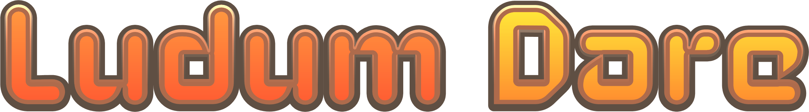

Historia
Criação
A ideia que inspirou a criação de Hollow Knight veio de um game jam, Ludum Dare 2013, no qual dois dos desenvolvedores do jogo, Ari Gibson e William Pellen, desenvolveram um jogo chamado Hungry Knight, no qual o personagem que viria a se tornar o cavaleiro matava insetos para fugir da fome. O jogo, considerado "não muito bom", recebeu nota 1 de 5 no Newgrounds, mas atualmente possui nota 4 de 5. Os desenvolvedores decidiram trabalhar em outra game jam com tema "abaixo da superfície", mas perderam o prazo. Entretanto, o conceito trouxe a ideia de criar um jogo com ambientação subterrânmea, um reino "antigo e profundo", e com personagens insetos.
Influências do jogo incluem Faxanadu, Metroid, Mega Man X, e Zelda II, com o Team Cherry afirmando que queria replicar o senso de maravilha e descobrimento dos jogos de sua infância, onde "podia haver segredos incríveis ou criaturas estranhas".
Acreditanto que o controle do personagem era o mais importante para a diversão do jogador, os desenvolvedores basearam o movimento do cavaleiro em Mega Man X, não dando ao personagem aceleração (ou desaceleração) ao se mover horizontalmente, assim como um grande controle de movimento no ar e a habilidade de interromper um pulo usando um dash. A intenção era fazer o jogador achar que qualquer dano tomado poderia ter sido evitado até o último momento.
Para criar a arte do jogo, os desenhos de Gibson foram usados diretamente no motor do jogo, criando uma "sensação de lugar vívido", e os desenvolvedores decidiram manter o visual simples para prevenir o prolongamento do tempo de desenvolvimento. A complexidade do mundo foi baseada em Metroid, permitindo os jogadores ficarem desorientados e perdidos, focando na diversão em encontrar o caminho certo, e possuindo apenas poucos sinais básicos para direcionar os jogadores para locais importantes. O maior desafio de design foi criar o sistema de mapas e encontrar um equilíbrio entre não entregar os segredos do jogo e não deixar os jogadores completamente às escuras.
Hollow Knight foi revelado no Kickstarter em novembro de 2014, buscando a soma de AU$ 35 mil. O jogo ultrapassou este objetivo, arrecadando mais de AU$ 57 mil. A primeira versão beta foi lançada em setembro de 2015 e a campanha continuou a alcançar vários objetivos, adicionando mais conteúdo e permitindo a mudança de motor de jogo do Stencyl para Unity. Alguns dos conteúdos, como "The Abyss", apesar de não terem sido completamente cobertos pelos fundos da campanha, ainda conseguiram ser inseridos no jogo de maneira reduzida.